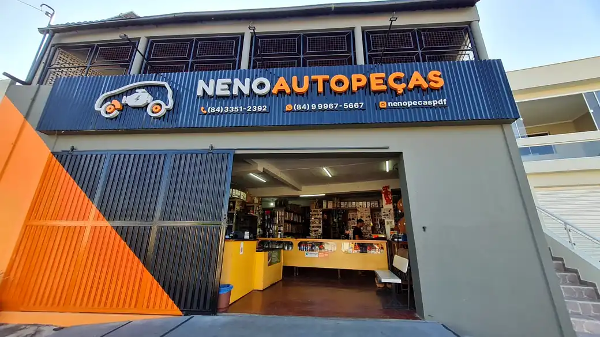
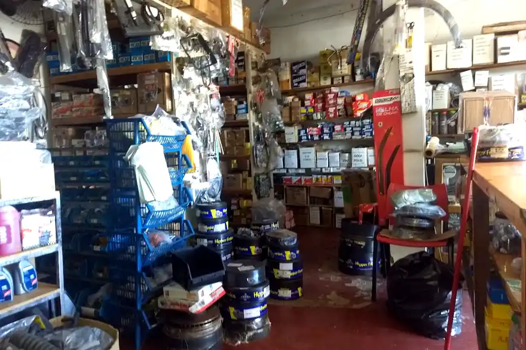
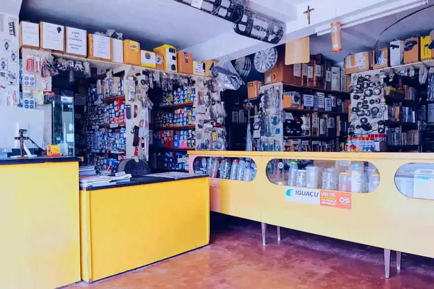
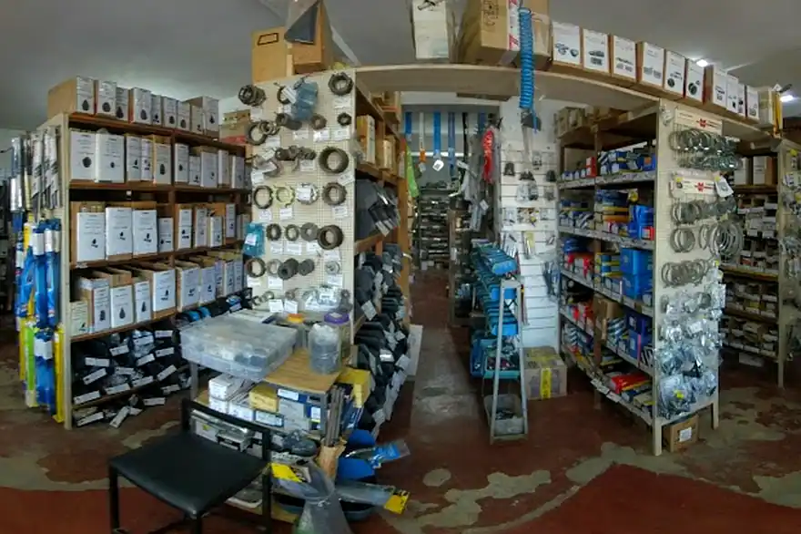
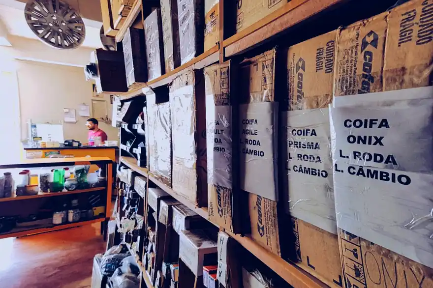
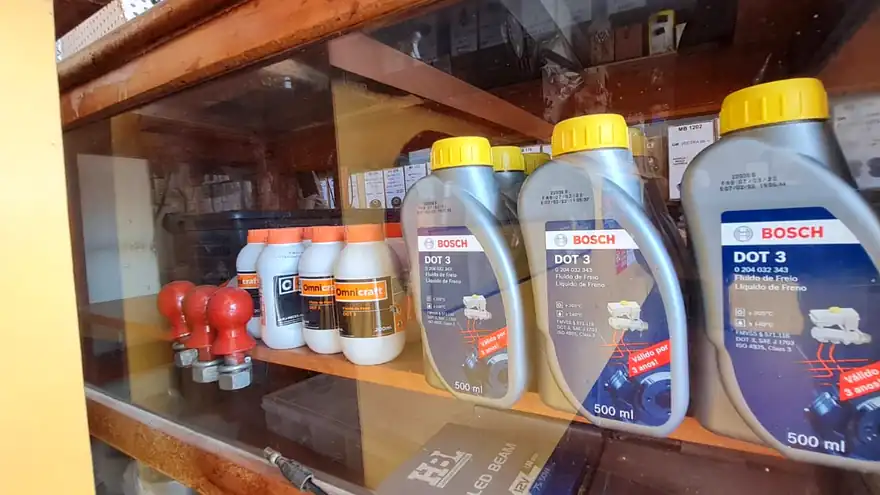

Confira o horário abaixo
Kit de embreagem em Pau dos Ferros
Tem no balcão hoje. Embreagem patinando, pedal duro, barulho quando pisa? Manda o modelo e o ano no WhatsApp que a gente confere a aplicação do kit e responde na hora se tem aqui. Tendo, é hoje — sem esperar encomenda.

4,9 no Google34 avaliações
- Estoque no balcão: leva hoje
- 4,9 no Google · 34 avaliações
- Nota fiscal e garantia do fabricante
- Dinheiro, cartão e aproximação
Tem na hora
A diferença não é o preço da internet. É o carro voltar a rodar hoje.
Estoque no balcão, não encomenda
- ✓Aqui: você vem, confere a peça na mão e leva hoje.
- ✕Site: 7 a 15 dias de frete com o carro parado.
Conferimos a aplicação antes de vender
Diz o modelo, o ano e o motor que a gente checa se a peça serve mesmo no seu carro. Peça errada volta pro estoque, não pro seu prejuízo.
Foto da peça antes de você sair de casa
Se você mora em outra cidade, a gente manda pelo WhatsApp a foto da peça na prateleira. Você só pega a estrada depois de ver que tem.
Catálogo por família
Toque na família para ver a lista. Não achou o item? Pergunte no WhatsApp — a prateleira é maior que a lista.
Embreagem
- Kit de embreagem
- Cilindro mestre de embreagem
- Cilindro auxiliar de embreagem
Suspensão e direção
- Amortecedor
- Suporte de amortecedor
- Pivô de suspensão
- Bandeja
- Terminal de direção
- Bieleta
- Rolamento de roda
- Cubo de roda
- Junta homocinética
- Base e coxim do motor
Freio
- Pastilha de freio
- Tambor de freio
- Disco de freio
- Cilindro mestre de freio
- Sapata
- Lona
Arrefecimento
- Radiador
- Eletroventilador
- Bomba d'água
- Válvula termostática
- Mangote de radiador
Linha pesada e antiga
- Mercedes-Benz 1113
- GM A10, C10, D10, D20, C20 e C40
- Ford F1000 e Ford Cargo
- Peça de trator
- Freio, suspensão, embreagem e arrefecimento dessas linhas
Modelos que a gente atende todo dia
- Palio
- Gol
- Uno
- Weekend
- Siena
- Celta
- Corsa
- Fiorino
- Elba
- Onix
- Strada
- Doblô
- Argo
- Fox
- Crossfox
- Prisma
- Cobalt
- Hilux
Montadoras
- Fiat
- GM / Chevrolet
- Volkswagen
- Ford
- Mercedes-Benz
Não está na lista? Manda o modelo e o ano no WhatsApp mesmo assim. Boa parte das peças serve em mais de um carro.
Linha pesada e antiga
1113, D20, C10, F1000, Cargo e trator: peça dessas você não acha pronta em marketplace — e quando acha, o prazo passa de 15 dias.
A gente segura essa linha em estoque justamente porque é o que ninguém mais segura. Freio, suspensão, embreagem e arrefecimento dessas máquinas saem do balcão no mesmo dia.
- Mercedes-Benz 1113
- GM A10
- GM C10
- GM D10
- GM D20
- GM C20
- GM C40
- Ford F1000
- Ford Cargo
- Trator

Condição de oficina
- Condição própria para oficina — preço diferente do balcão, combinado direto com a gente.
- Lista de disponibilidade às terças e sextas — você recebe no WhatsApp o que entrou e o que está na prateleira.
- Atendimento prioritário — carro no elevador não espera fila.
Não é depósito de foto bonita: é a prateleira mesmo
Fotos da loja na Av. Senador Dinarte Mariz, as mesmas do nosso Perfil da Empresa no Google.




Avaliações no Google
Comentários copiados do nosso Perfil da Empresa. Ver todas no Google.
“Atendimento muito bom, recomendo.”
5 de 5 · ago. 2026
“Excelente. Ótimo trabalho e atendimento.”
5 de 5 · ago. 2026
“Ótimo atendimento, loja clássica e muito boa!”
5 de 5 · abr. 2021
“Ótimo atendimento e qualidade nos serviços.”
5 de 5 · mar. 2019
Como chegar
Av. Senador Dinarte Mariz, 632 — São Benedito
Pau dos Ferros - RN, 59900-000
Avenida principal de Pau dos Ferros. Estacionamento gratuito na porta e Wi-Fi na loja. Entrada e atendimento acessíveis para cadeira de rodas.
| Segunda a sexta | 07:00–11:30 e 13:00–17:00 |
|---|---|
| Sábado | 07:00–12:00 |
| Domingo | Fechado |
O mapa só carrega quando você pedir — assim a página abre rápido no 4G.
Cidades que atendemos
- Pau dos Ferros
- São Francisco do Oeste
- Marcelino Vieira
- Rafael Fernandes
- Encanto
- Portalegre
- José da Penha
- Doutor Severiano
- Água Nova
- Luís Gomes
- São Miguel
- Alexandria
- Martins
- Pilões
- Serrinha dos Pintos
- Tenente Ananias
- Major Sales
Dúvidas
Vocês têm a peça do meu carro?
Manda no WhatsApp o modelo, o ano e o motor — de preferência uma foto do documento ou da peça velha. A gente confere a aplicação e responde se tem aqui, junto com a foto da peça na prateleira. Se não tiver, a gente fala na hora, sem enrolar.
Entregam em outra cidade?
Fazemos entrega. Para as cidades do Alto Oeste a gente combina o envio no WhatsApp — muita gente também manda buscar com quem vem a Pau dos Ferros no mesmo dia. O combinado sai por escrito antes de você pagar.
É peça original ou paralela?
Trabalhamos com as duas. A gente diz qual é qual antes de vender, com a marca na mão, e o preço muda conforme a escolha. Quem decide é você — só não vendemos peça sem dizer o que é.
Tem garantia?
Tem. Toda peça sai com nota e com a garantia do fabricante. Deu problema dentro do prazo, traz na loja com a nota que a gente resolve no balcão.
Quais as formas de pagamento?
Dinheiro, cartão de crédito e de débito (VISA e MasterCard) e pagamento por aproximação no celular. Não é preciso agendar nada: chega e é atendido.
Atendem oficina com condição diferente?
Sim. Oficina mecânica tem condição própria, atendimento prioritário no balcão e entra na lista de disponibilidade que mandamos às terças e sextas. Chame no WhatsApp dizendo que é oficina.